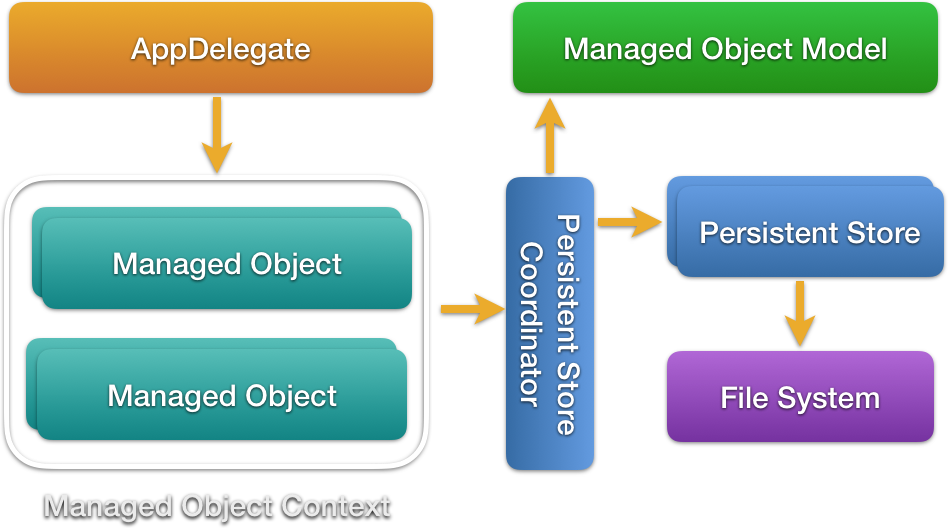

CS333
Mobile Development
Ilya Loshkarev loshkarev.i@gmail.com
Overview

Sandbox
Sandbox

Bundled Resources
// Get file URL
let resourceURL = Bundle.main.url(forResource: "MyXmlConfig",
withExtension: "xml")!
let parser = XMLParser(contentsOfURL: resourceURL)
Assets and other resources that are built directly into bundle
Parameter List
if let path = Bundle.main.path(
forResource: "Info",
ofType: "plist"),
let pList = NSDictionary(contentsOfFile: path)
as? [String: AnyObject]
{
let value = pList["SomeKey"] as? String // NSNumber, URL
}
Parameter lists are better suited for storing static non-significant content
File Manager
// Get file manager
let fileManager = FileManager.default // Singleton
// Get directory URL
let docsURL: URL? = fileManager.urls(
for: .documentDirectory,
in: .userDomainMask).last
// Create file URL
let fileURL = docsURL!.appendingPathComponent(fileName)
A file manager object is your primary mode of
interaction with the file system
Avaliable Directories
- Documents – user files, backed by iCloud
- Library/Application Support – app-created files, backed by iCloud
- Library/Cache – non-significant data, can be deleted to save space
- tmp – non-significant data, could be deleted without notice
File Manager Operations
fileManager.removeItem( at: fileURL)
//
fileManager.copyItem( at: fileURL, to: targetURL)
//
fileManager.moveItem( at: fileURL, to: targetURL)
//
fileManager.createDirectory(/* ... */)
Location can be specified by either URL or String path
Raw Data
if fileManager.fileExists(atPath: fileURL.path) {
let data = try! Data(contentsOf: fileURL)
try! data.write(to: newFileURL)
let sameData = fileManager.contents(atPath: fileURL.path)
fileManager.createFile(atPath: newFileURL.path,
contents: sameData,
attributes: nil)
}
Data is a simple collection of bytes
Can be converted to and from many datatypes
String
let text = try! String(contentsOf: path, encoding: .utf8)
try! text.write(to: path, atomically: false, encoding: .utf8)
Archiving
Object Graph

Archivies vs Serializations
- The serialization only preserves the values of the objects and their position in the hierarchy
- The archive preserves the identity of every object in the graph and all the relationships it has with all the other objects in the graph
Keyed Archives
Values that an object encodes to a keyed archive can be individually named with an arbitrary string
Archives are hierarchical with each object defining a separate name space for its encoded values, similar to the object’s instance variables
User Defaults
// Set value for key
UserDefaults.standard.set(url, forKey: "myURL")
// Get value for key
UserDefaults.standard.url(forKey: "myURL")
Standart keyed archive stored in Library/Preferences
NSCoder
coder.encode(42, forKey: "42")
let i = coder.decodeInt32(forKey: "42")
Objects are written to and read from archives
with coder objects
All coders adopt NSCoder protocol
NSCoding
class Photo : NSObject, NSCoding {
var author: String!
var photoPath: String!
required convenience init?(coder decoder: NSCoder) {
self.init()
author = decoder.decodeObject(forKey: "author") as? String
photoPath = decoder.decodeObject(forKey: "photoPath") as? String
}
func encode(with coder: NSCoder) {
coder.encode(author, forKey: "author")
coder.encode(photoURL, forKey: "photoPath")
}
}
An object being encoded or decoded is responsible for encoding and decoding its instance variables
Keyed Archiver
var photos: [Photo]
// Get object from file
NSKeyedUnarchiver.unarchiveObject(withFile: fileURL.path) as! [Photo]
// Encode object to file
NSKeyedArchiver.archiveRootObject(photos, toFile: fileURL.path)
Out of Sandbox
Permissions
Any access out of sandbox should be authorised by the user
NSPhotoLibraryUsageDescription - Select images to process
UIRequiredDeviceCapabilities -
Photos
Image Picker
Allows to capture an image or a video with camera or
pick from the existing ones in the library
let imagePicker = UIImagePickerController()
imagePicker.sourceType = .photoLibrary
imagePicker.mediaTypes =
UIImagePickerController.availableMediaTypes(for:
imagePicker.sourceType)!
present(imagePicker, animated: true)
Image Picker Delegate
func imagePickerController(_ picker: UIImagePickerController,
didFinishPickingMediaWithInfo info: [String : Any]) {
dismiss(animated: true, completion: nil)
imageView.image = info[UIImagePickerControllerOriginalImage]
as? UIImage
}
func imagePickerControllerDidCancel(_ picker: UIImagePickerController) {
dismiss(animated: true, completion: nil)
}
Capture With Picker
let imagePicker = UIImagePickerController()
if UIImagePickerController.isCameraDeviceAvailable(.rear) {
imagePicker.sourceType = .camera
imagePicker.mediaTypes = [kUTTypeImage] // import MobileCoreServices
imagePicker.cameraDevice = .rear
if UIImagePickerController.isFlashAvailable(for: .rear) {
imagePicker.cameraFlashMode = .on
}
}
Camera is not avaliable in simulator
Saving Images
func save(image: UIImage, to album: PHAssetCollection) {
PHPhotoLibrary.shared().performChanges({
let creationRequest =
PHAssetChangeRequest.creationRequestForAsset(from: image)
if let addAssetRequest =
PHAssetCollectionChangeRequest(for: album)
{
addAssetRequest.addAssets(
[creationRequest.placeholderForCreatedAsset!])
}
}, completionHandler: nil)
}
UIImageWriteToSavedPhotosAlbum(image, self,
#selector(imageDidSave), nil)
Activity Controller
let activity = UIActivityViewController(
activityItems: [imageView.image!],
applicationActivities: nil)
present(activity, animated:true, completion:nil)
Provides a unified services interface for sharing and performing actions on data within an application
Availiable Activities
- Copying to pasteboard
- Saving to Photos or Notes
- Sending to other apps
Core Data
Core Data vs Archives
| Core Data | NSKeyedArchiver | |
|---|---|---|
| Entity Modeling | ✓ | - |
| Querying | ✓ | - |
| Speed | Fast | Slow |
| Serialization | SQLite or NSData | NSData |
| Migrations | Automatic | Manual |
| Undo Manager | Automatic | Manual |
Concepts Stack
Model
- Describes the data that is going to be accessed by the Core Data stack

Compiled into a bundle resource .momd
Persistent Storage Coordinator
Connects model to data
// Locate Model file
let modelURL = Bundle.main.url(forResource: "DataModel",
withExtension: "momd")!
// Load Model
let model = NSManagedObjectModel(contentsOfURL: modelURL)!
// Create Store Coordinator for the model
let psc = NSPersistentStoreCoordinator(managedObjectModel: model)
Creates new instances of the entities in the model
and retrieves existing instances from a persistent store
Persistent Store
// Construct file URL
let docURL = FileManager.default.urls(for: .documentDirectory, in: .userDomainMask).last!
let location = docURL.appendingPathComponent("DataModel.sqlite")
// Create SQLite store and add it to Store Coordinator
try! coordinator.addPersistentStoreWithType( NSSQLiteStoreType,
configuration: nil, URL: location, options: nil)
Persistent store declares the way Core Data objects are stored
// Supported Store Types
NSSQLiteStoreType // SQLite - loads required data from disk
NSBinaryStoreType // Binary - loads full object graph to memory
NSInMemoryStoreType // Memory - doesn't occupy disk space
Managed Object Context
Manager for a collection of entity instances
let context = NSManagedObjectContext(
concurrencyType: .mainQueueConcurrencyType)
// Should be connected to a persistent store
managedObjectContext.persistentStoreCoordinator = coordinator
Context bound to UI should run in the main queue
Managed Objects
Every managed object should exist in context
// Add new object into context
let e = NSEntityDescription.insertNewObject(
forEntityName:"Entity",
into: context) as! Entity
// Get some objects from context
let request = NSFetchRequest<Entity>(entityName: "Entity")
let results = try! context.fetch(request)
for entity in results {
entity.name = "I'm an entity!"
}
// Send everything to store
try! context.save()
Persistent Container
let container = NSPersistentContainer(name: "DataModel")
container.loadPersistentStores(completionHandler: {
(storeDescription, error) in
if let error = error as NSError? {
fatalError("Unresolved error \(error), \(error.userInfo)")
}
})
container.context.save()
A container that encapsulates the Core Data stack
Availiable since iOS 10.0
Managed Objects
Model to Objects

Entity
Entity Relationships

Relationship & Inverse Type
| To-One | To-Many | |
|---|---|---|
| To-One | One to One | One to Many |
| To-Many | One to Many | Many to Many |
Assigment of inverse relationship helps
to preserve object graph integrity
Managed Object
Describes single instance of the entity
class Bird: NSManagedObject {
// NSManaged properties are mapped to model entities
@NSManaged var name: String
@NSManaged var latinName: String
@NSManaged var data: String?
@NSManaged var photo: String?
@NSManaged var favourite: Bool
}
Every managed object needs a context
to define its entity mappings
Entity Description
Specifies an entity’s name, its properties
and the class by which it is represented
static let entityName = "Bird"
static var entityDescription: NSEntityDescription {
if #available(iOS 10.0, *) {
// in iOS 10 default class method has been added
return self.entity()
} else {
return NSEntityDescription.entity(
forEntityName: entityName,
in: Ornitary.context)!
}
}
Intialization
// NSManagedObject subclass should override this initializer
override init(entity: NSEntityDescription,
insertInto context: NSManagedObjectContext?) {
super.init(entity: entity, insertInto: context)
}
convenience init() {
self.init(entity: Bird.entityDescription,
insertInto: Ornitary.context)
/* properties initialization here */
}
Every object of type Bird will be inserted
into Ornitary context
Saving Context
static func save () {
if context.hasChanges {
do {
try context.save()
} catch {
fatalError("Failure to save context: \(error)")
}
}
}
The creation of NSManagedObject instances
does not guarantee their persistence
Fetching Objects
NSFetchRequest retrieves data from persistent store
// Create request for every object of specific entity
let request = NSFetchRequest<Bird>(entityName: Bird.entityName)
// Fetch data from the store
let results = try! context.fetch(request)
// Count number of results for request without fetching data
let count = try! context.count(for: request)
// In iOS 10 default entity fetchRequest method has been added
let count2 = try! context.count(for: Bird.fetchRequest())
Filtering Results
let birdsName = "Puffin"
let latinNameSubstr = "pus"
// Set number of results
request.fetchLimit = 10
// Set number of skipped objects
request.fetchOffset = 10
request.predicate = NSPredicate(
format: "name == %@ OR latinName CONTAINS %@",
birdsName, latinNameSubstr)
Predicates can access relationship properties
with ALL, ANY or NONE aggregate operations
Deleting Objects
let birdsToDelete = try! context.fetch(request)
for bird in birdsToDelete {
context.delete(bird)
}
// Or you can just:
context.delete(thisBirdInParticular)